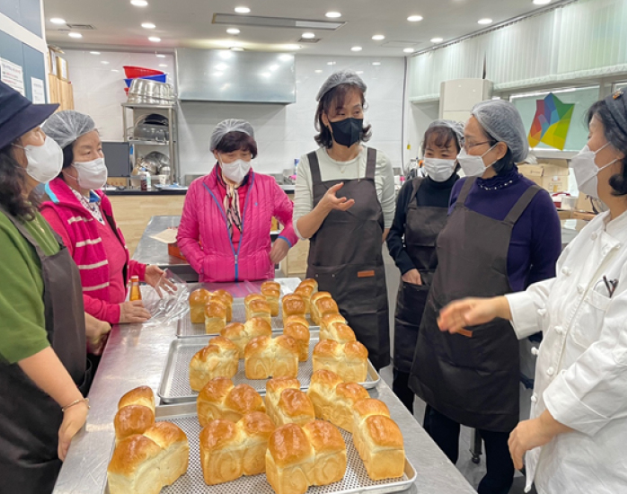
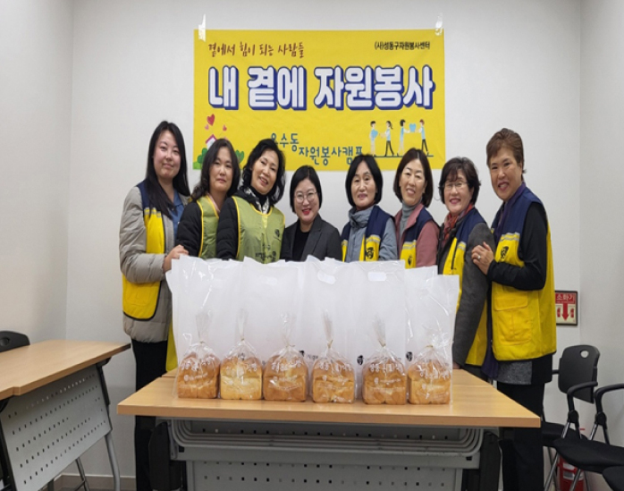
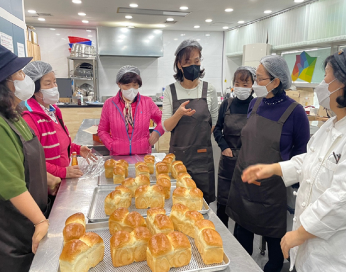
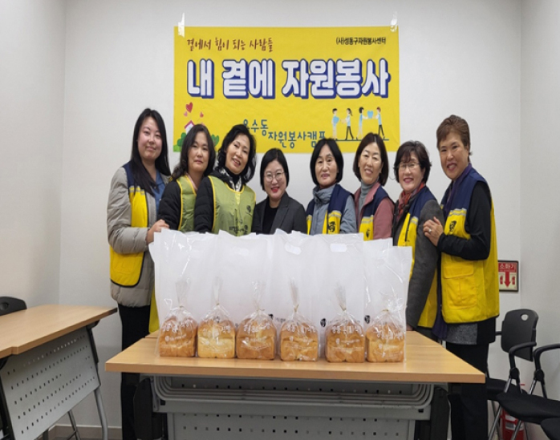

특성화사업
성동온(溫) 식빵
-
‘성동 온(溫)식빵’
관내 취약계층 어르신 및 고위험군 1인가구를 대상으로 제빵전문교육을 이수한 봉사자분들이 식빵을 직접 만들고 동자원봉사캠프가 수혜가정에 직접 전달하며 이웃 간 온기와 안부를 나누는 활동입니다.
-
주요내용
사회적 고립감을 갖는 복지 사각지대의 심리적·정서적 지원 및 식빵을 매개로 한 소통의 창구가 되는 것을 목표로 하고 있습니다. 동주민센터 및 성동구1인가구지원센터와 연계하여 수혜자를 선정하고, 제빵봉사단이 만든 식빵을 동자원봉사캠프가 수령 및 전달합니다. 봉사단체 그린맘, 마장동·용답동 봉사단, 효정봉사단, 동자원봉사캠프가 연합하여 활동을 이어나가고 있으며 매월 500가구를 대상으로 진행됩니다.
-
활동사진
 


